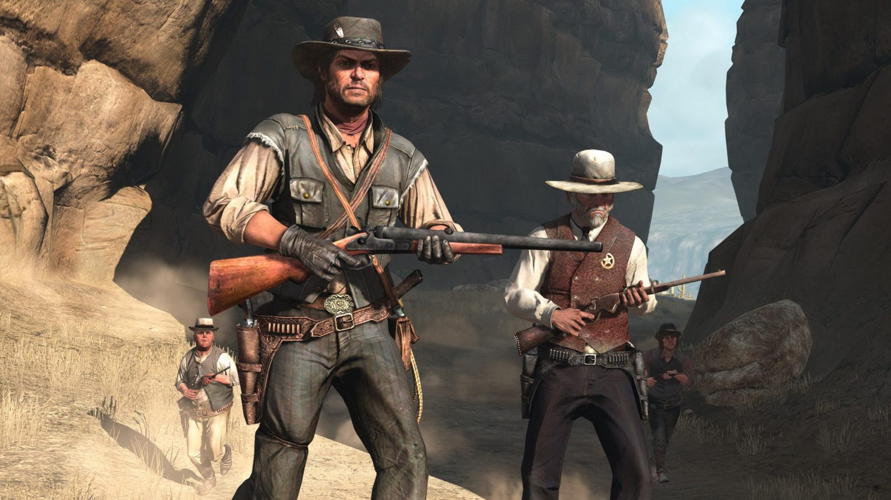

Some games are so iconic that bringing them to new platforms is a must when the chance arises. Red Dead
Redemption has finally arrived on PC/Steam, so if you've never experienced the
journey of John Marston, now's
your chance to do it on your computer!
In the story, Marston is trying to lead a peaceful life with his family, but he's forced back into action to
hunt down members of his former gang, the Van Der Linde Gang. Ride across the frontier, facing off against
anyone who dares stand in your way.
And don't miss out on the RDR undead expansion campaign, where
you'll find out if your aim is sharp enough to take down zombies!

Including a VR title on this list says a lot in itself. VR is
often hailed as "the future of gaming," yet only a small number of players actually engage with it.
But with games like Batman: Arkham Shadow, you’ll start to see the draw of high-quality VR
experiences. Set within the universe of the four “Arkham games” , you’ll step
back into Batman’s boots, uncovering the mystery surrounding the elusive Ratcatcher!
Through Batman’s own perspective, you’ll face off against foes and encounter key figures from the original
games. Here’s hoping you have a Meta 3 headset to fully immerse yourself in the action!

This list has its fair share of remakes, and Until Dawn is among them. The game gets a full visual upgrade, enhancing details and character expressions as you navigate the horror. You’re part of a group of friends revisiting a winter resort a year after terrifying events, only to find the nightmare returning. Discover the truth and make choices that determine everyone’s fate.

Max Caulfield returns in Life is Strange: Double Exposure, where her powers are needed more than
ever. The story begins with Max discovering her friend Safi’s body after a mysterious attack. Devastated,
Max unlocks a new ability that lets her enter an alternate reality where Safi is still alive.
Switching between these two realities, Max must uncover the truth behind Safi's death, protect her in one
world, and seek justice in the other. Not everything is as it seems—dig deep to uncover what truly happened!

Dragon Age: The Veilguard might have mixed reactions, but there’s no denying it was one of
October’s biggest releases, with a dedicated fanbase behind it.
In this long-awaited Bioware title, your mission is to gather a team to confront a world-ending threat
capable of corrupting everything in its path. Stand together, rise up, and do whatever it takes to seal away
this dark force.

October saw plenty of remasters, but the Silent Hill 2 remake stands out as a fan favorite. This reimagining of the PS2 horror classic lets you play as James, a man searching for answers about his wife after receiving a mysterious letter that leads him to Silent Hill—a town crawling with terrifying monsters, including the infamous Pyramid Head. What secrets lie within this eerie place? Dive in to uncover the chilling truth.

It’s fitting to include Sonic x Shadow Generations on this list, as it blends both old and new.
This game remasters the classic Generations storyline, uniting past and present Sonic to face a familiar
threat, while adding fresh content that delves into Shadow The Hedgehog’s origins.
Most fans are excited for Shadow’s new storyline—especially with his upcoming appearance in the live-action
movie, making this a great chance to get to know him before seeing him on the big screen.

We’re a bit hesitant to discuss Call of Duty: Black Ops 6 since it doesn’t offer much that’s new
compared to previous titles. While it’s an improvement over last year’s game, that’s not saying much.
The main campaign is set during the Gulf War, where you must uncover the truth to clear your team’s name.
However, most players will likely grab it for the multiplayer modes and zombie battles, and we can’t blame
you for that. If you’re interested, go for it!

We’re prioritizing Dragon Ball: Sparking Zero over the FPS title—deal with it! This game excited franchise fans from the start, featuring over 180 characters, including those from non-canon movies. With engaging “What If?” scenarios, a robust tournament mode, and customizable matches, it’s the most comprehensive game in the series. Plus, it sold 3 million copies on launch day—pretty impressive!

In consideration of its potential as the 2024 “Game of the Year,” we’re highlighting Metaphor: ReFantazio in this final slot. This game offers a personal twist on Atlus's fantasy and RPG styles. You aim to become the king by winning the people's support, building a personal crew, enhancing your “Archetypes” in battle, and proving to be a ruler the realm can admire.
BACK TO TOP
Copyright © 2024 GameSphere All rights reserved.